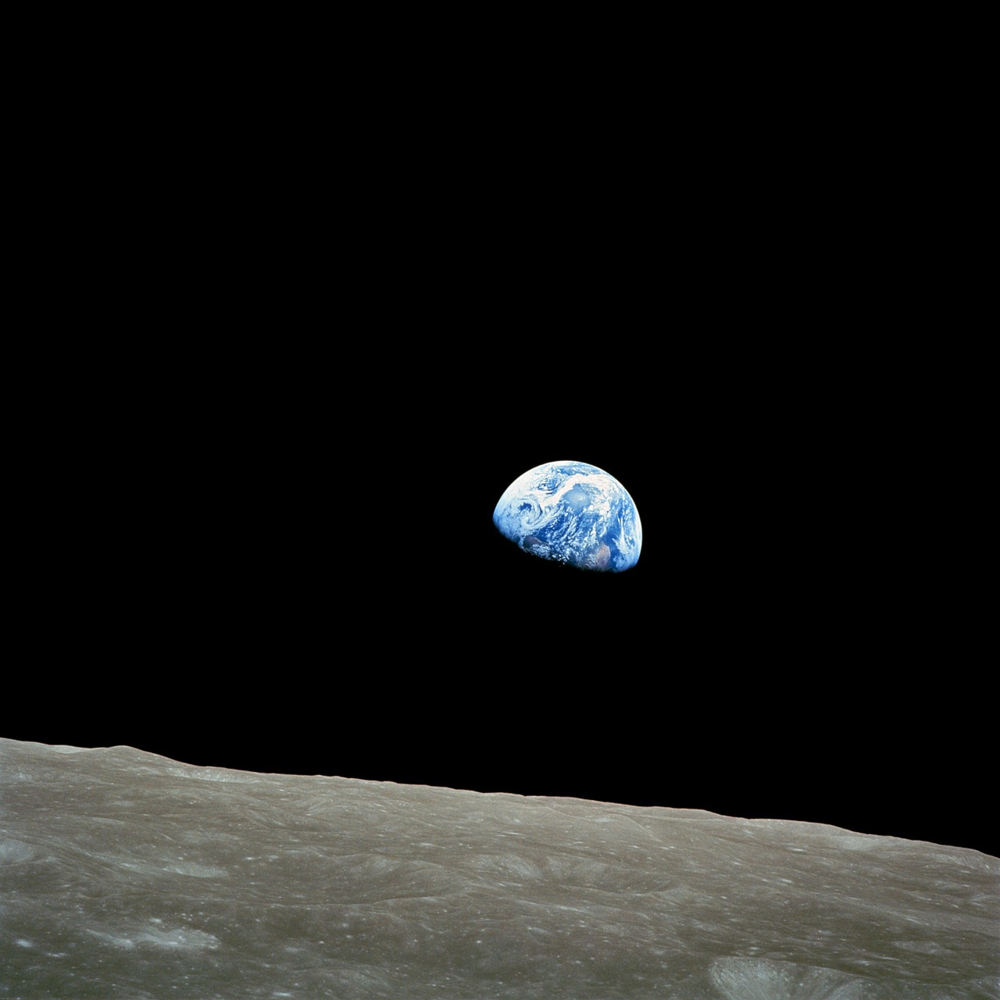

오늘은 왠지 마음이 서글프다.. 팀사람들과 함께하는 시간도 보내고 새새끼리 놀러도 가고 방순이들끼리 밥고도 했는데, 나는 왜이렇게 마음이 안좋을까? 오늘은 드뷔시의 달빛같은 밤이다,, 나는 확실히 i성향이 맞는 것 같다. 사람들과 함께 보내는 시간이 즐겁고 좋지만, 나 자신에게 온전히 쏟는 시간도 필요하다는 것을 깨닫는다. 이렇게 여러 경험을 해보며 나 자신에 대한 배움이 생기는 것 같다. 오늘은 왠지 시를 한 편 쓰고 싶어 글을 적어본다..
달빛아래서


달빛 윤슬
끊임없이 찾고 있었다
빛나는 그 무언가를
눈이 부시게
빛나는 것은
모두 내 안에 있었다.